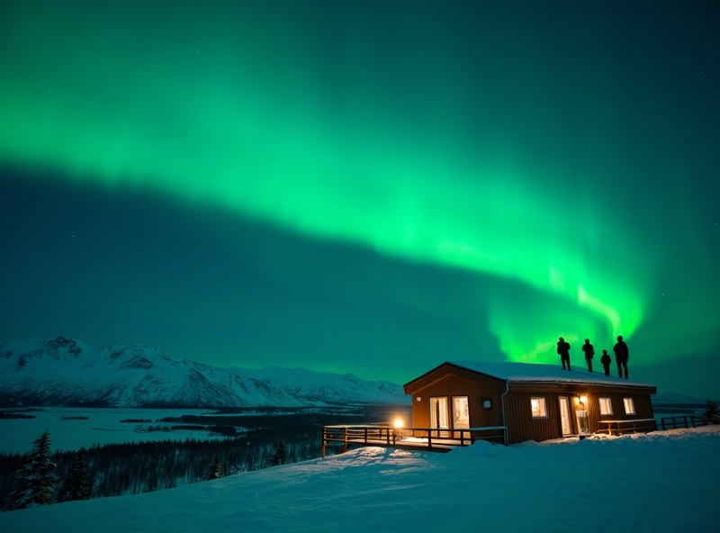
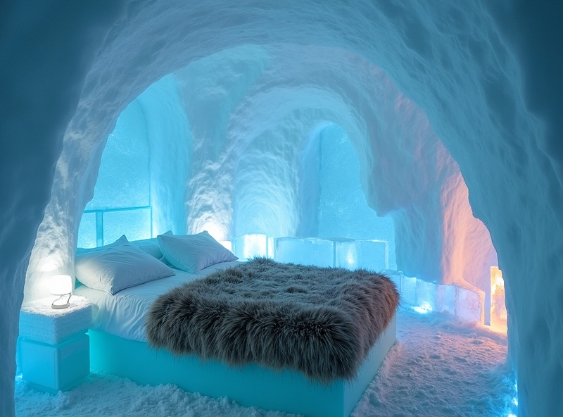

全球極光觀測率最高的地區之一
阿比斯庫的獨特微氣候創造了「藍洞」現象，讓這裡的上空比其他北極地區更常無雲。
OVERVIEW
瑞典北部的阿比斯庫國家公園，被全球極光愛好者稱為「極光心臟」。這裡擁有獨特的微氣候，讓天空比其他北極地區更常保持晴朗 — 這意味著當其他地方被雲層遮蔽時，阿比斯庫很可能萬里無雲，極光照樣準時登場。再加上世界著名的 Aurora Sky Station 觀測站，瑞典是科學與浪漫並存的極光天堂。
阿比斯庫的獨特微氣候創造了「藍洞」現象，讓這裡的上空比其他北極地區更常無雲。
坐纜車上到海拔 900 米的極光觀測站，是最接近極光的沉浸式體驗。
全世界規模最大的冰旅館就位於瑞典 Jukkasjärvi，每年融解又重建，住進去的體驗獨一無二。
從斯德哥爾摩搭直達夜車即可抵達阿比斯庫，交通比其他北極觀測點更順暢。
MUST VISIT

景點 1
乘坐開放式纜椅緩緩升上海拔 900 米的山頂觀測站，這裡遠離一切地面光害。穿上站方提供的極地防寒衣，享用熱飲和輕食，然後在專業嚮導的帶領下等待那道綠色光芒劃破天際。

景點 2
全世界規模最大、歷史最悠久的冰旅館，每間客房都由來自世界各地的藝術家手工雕刻。住在馴鹿皮上、裹在極地睡袋中，周圍是冰雕藝術 — 極光就在冰牆之外。
景點 3
瑞典最大的高山湖泊，冬季完全結冰變成一望無際的雪原。開闊的視野加上周圍的山脈剪影，是阿比斯庫除了山頂觀測站之外最受歡迎的極光拍攝地。
9 月～隔年 3 月
北極圈內大陸性氣候，冬季乾冷。阿比斯庫被山脈環繞，形成保護性的「藍洞」微氣候
阿比斯庫冬季白天約 -5°C ~ 0°C，夜間 -15°C ~ -5°C
TRAVELER STORIES
「阿比斯庫的 Aurora Sky Station 是我去過最棒的極光觀測站。沒有其他地方能讓你這麼靠近天空。那晚極光像瀑布一樣流了兩個小時，全場所有陌生人一起驚嘆，那種共鳴太美了。」
「去之前朋友都說冰島比較有名，但問過很多極光發燒友都推阿比斯庫。去了之後完全懂為什麼，連續三天晚上都看到極光，而且第二晚是超級大爆發。Aurora Travel 的安排很到位。」